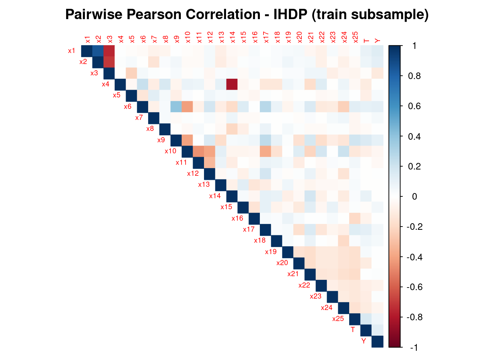
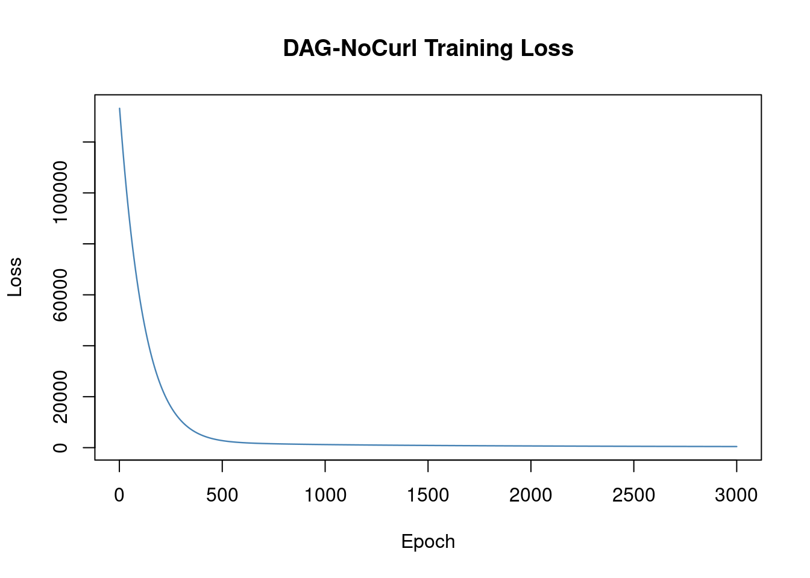
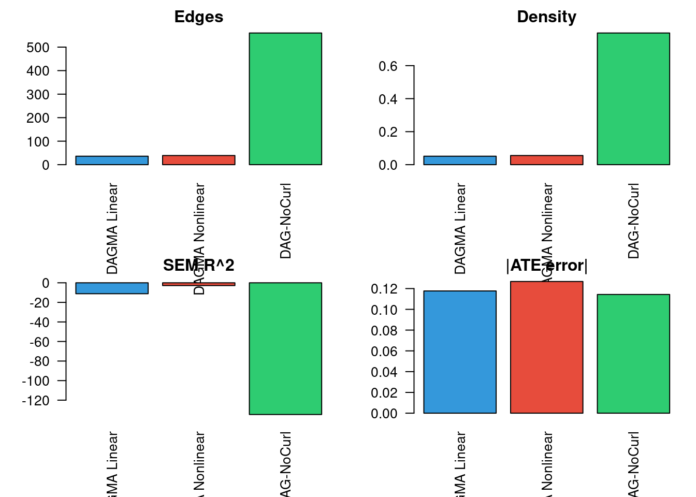

Code
packages <- c(
'tidyverse',
'plyr',
'RCausalML',
'causaldata',
'torch',
'dagitty',
'ggdag',
'igraph')

This notebook compares three continuous-optimization methods for causal structure learning — DAGMA Linear, DAGMA Nonlinear (MLP), and DAG-NoCurl — applied to the IHDP (Infant Health and Development Program) benchmark dataset.
All three methods share the same goal: recover a Directed Acyclic Graph (DAG) from observational data, where each directed edge \(X \to Y\) encodes a direct causal influence rather than a mere correlation. The recovered graph is then used to identify valid adjustment sets and estimate Average Treatment Effects (ATEs) via the backdoor criterion.
The three methods differ fundamentally in how they enforce acyclicity and how they model the structural equations:
The IHDP dataset tracks 25 covariates (six continuous child and maternal characteristics, nineteen binary indicators) along with a binary treatment (specialist home visits) and a continuous outcome. Its known potential outcomes make it possible to evaluate ATE estimates against an oracle.
DAGMA (DAG via M-matrices for Acyclicity) was introduced by Bello, Squires, and Bhattacharya (2022). Its core insight is a novel algebraic characterization of acyclicity that avoids numerical instability problems in earlier methods.
DAG-NoCurl (Yu et al., 2021) approaches causal discovery from a fundamentally different angle - differential geometry. It parameterizes the graph as a vector field and enforces acyclicity by projecting onto the curl-free component of that field.
DAG-NoCurl enforces acyclicity via:
\[W = U^T U - \text{diag}(U^T U)\]
The loss is:
\[\min_{U} \; \mathcal{L}(W(U)) + \lambda \|W(U)\|_1 + \mu \cdot \text{curl}(W(U))\]

| Application | How DAGMA / DAG-NoCurl Helps |
|---|---|
| Healthcare (IHDP) | Discover which covariates causally precede treatment and outcome |
| Genomics | Infer gene regulatory networks from expression data |
| Economics | Identify causal chains in macroeconomic indicators |
| Fairness auditing | Detect spurious vs. causal paths to model predictions |
| Anomaly detection | Structural changes in the DAG signal distributional shifts |
packages <- c(
'tidyverse',
'plyr',
'RCausalML',
'causaldata',
'torch',
'dagitty',
'ggdag',
'igraph')# Install missing packages
#new_packages <- packages[!(packages %in% installed.packages()[,"Package"])]
#if(length(new_packages)) install.packages(new_packages)# Use local RCausalML when rendering from package root, tutorials/, or sibling repo
find_pkg_root <- function() {
root_candidates <- c(
".", "..", "../..",
file.path("..", "RCausalML"),
file.path("../..", "RCausalML")
)
for (p in root_candidates) {
if (file.exists(file.path(p, "DESCRIPTION")) &&
file.exists(file.path(p, "R", "causalDeepNet.R"))) {
return(normalizePath(p))
}
}
NULL
}
pkg_root <- find_pkg_root()
if (!is.null(pkg_root) && requireNamespace("devtools", quietly = TRUE)) {
try(devtools::load_all(pkg_root, quiet = TRUE), silent = TRUE)
}
invisible(lapply(packages, function(pkg) {
suppressPackageStartupMessages(library(pkg, character.only = TRUE))
}))
rcm_ns <- asNamespace("RCausalML")
dagma_fns <- c("dagmaLinear", "dagma", "DagmaMLP")
missing <- dagma_fns[!vapply(
dagma_fns,
function(fn) exists(fn, mode = "function", where = rcm_ns, inherits = FALSE),
logical(1L)
)]
if (length(missing) > 0L) {
stop(
"Missing in RCausalML namespace: ", paste(missing, collapse = ", "), ".\n",
"Reinstall from the package root:\n",
" devtools::load_all(\"../RCausalML\") or devtools::install(\"../RCausalML\")"
)
}
for (fn in dagma_fns) {
if (!exists(fn, mode = "function", inherits = FALSE)) {
assign(fn, get(fn, envir = rcm_ns), envir = .GlobalEnv)
}
}run_fast <- TRUE
device_use <- NULL
SEED <- 42L
if (requireNamespace("torch", quietly = TRUE)) {
device_use <- if (torch::cuda_is_available()) "cuda" else "cpu"
}
set.seed(SEED)
if (requireNamespace("torch", quietly = TRUE)) {
torch::torch_manual_seed(SEED)
}The IHDP files on the causalml repo are ihdp_npci_1.csv … ihdp_npci_9.csv (nine replicates; there is no _10). We load them, stack, optionally replicate rows to match CEVAE/GANITE-style scale, and split train/test.
Column layout: treatment, y_factual, y_cfactual, mu0, mu1, x1…x25 (6 continuous covariates, 19 binary).
data_loading_ihdp <- function(train_rate = 0.8, replications = 100L) {
base_url <- "https://raw.githubusercontent.com/uber/causalml/master/docs/examples/data"
local_dirs <- c(
"inst/examples/data",
"inst/exdata",
file.path("..", "..", "examples", "data"),
file.path("..", "..", "..", "..", "inst", "examples", "data")
)
read_one <- function(i) {
fname <- sprintf("ihdp_npci_%d.csv", i)
local_path <- NULL
for (d in local_dirs) {
p <- file.path(d, fname)
if (file.exists(p)) {
local_path <- p
break
}
}
if (!is.null(local_path)) {
return(utils::read.csv(local_path, header = FALSE))
}
url <- sprintf("%s/%s", base_url, fname)
tryCatch(
utils::read.csv(url, header = FALSE),
error = function(e) NULL
)
}
dfs <- Filter(Negate(is.null), lapply(1:9, read_one))
if (length(dfs) == 0L) {
warning(
"IHDP files were not found locally and could not be downloaded; using a synthetic IHDP-like fallback dataset."
)
n <- 747L * 9L
x_cont <- matrix(rnorm(n * 6L), ncol = 6L)
x_bin <- matrix(rbinom(n * 19L, size = 1L, prob = 0.5), ncol = 19L)
x <- cbind(x_cont, x_bin)
colnames(x) <- paste0("x", 1:25)
treatment <- rbinom(n, size = 1L, prob = plogis(0.2 * x[, 1] - 0.1 * x[, 2]))
mu0 <- 0.3 * x[, 1] - 0.2 * x[, 2] + 0.15 * x[, 3] + rnorm(n, sd = 0.2)
tau <- 1.0 + 0.2 * x[, 4] - 0.15 * x[, 5]
mu1 <- mu0 + tau
y_factual <- ifelse(treatment == 1, mu1, mu0) + rnorm(n, sd = 0.3)
y_cfactual <- ifelse(treatment == 1, mu0, mu1) + rnorm(n, sd = 0.3)
df <- data.frame(
treatment = treatment,
y_factual = y_factual,
y_cfactual = y_cfactual,
mu0 = mu0,
mu1 = mu1,
x
)
} else {
df <- do.call(rbind, dfs)
colnames(df) <- c("treatment", "y_factual", "y_cfactual", "mu0", "mu1", paste0("x", 1:25))
}
if (replications > 1L) {
df <- do.call(rbind, rep(list(df), replications))
}
x <- as.matrix(df[, paste0('x', 1:25)])
t <- as.numeric(df$treatment)
y <- as.numeric(df$y_factual)
potential_y <- as.matrix(df[, c('mu0', 'mu1')])
n <- nrow(x)
idx <- sample.int(n)
n_train <- floor(train_rate * n)
train_idx <- idx[seq_len(n_train)]
test_idx <- idx[(n_train + 1L):n]
list(
train_x = x[train_idx, , drop = FALSE],
train_t = t[train_idx],
train_y = y[train_idx],
train_potential_y = potential_y[train_idx, , drop = FALSE],
test_x = x[test_idx, , drop = FALSE],
test_potential_y = potential_y[test_idx, , drop = FALSE]
)
}
preprocess_features <- function(train_x, test_x) {
a <- train_x
b <- test_x
mu <- colMeans(train_x[, 1:6, drop = FALSE])
sdv <- apply(train_x[, 1:6, drop = FALSE], 2, sd)
sdv[sdv == 0] <- 1
a[, 1:6] <- scale(train_x[, 1:6, drop = FALSE], center = mu, scale = sdv)
b[, 1:6] <- scale(test_x[, 1:6, drop = FALSE], center = mu, scale = sdv)
list(train_x = a, test_x = b, center = mu, scale = sdv)
}
cat('Loading IHDP data ...\n')Loading IHDP data ...ihdp <- data_loading_ihdp(train_rate = 0.8, replications = 100)
proc <- preprocess_features(ihdp$train_x, ihdp$test_x)
train_x <- proc$train_x
train_t <- ihdp$train_t
train_y <- ihdp$train_y
train_potential_y <- ihdp$train_potential_y
test_x <- proc$test_x
test_potential_y <- ihdp$test_potential_y
cat('Train size :', format(nrow(train_x), big.mark = ','), '\n')Train size : 537,840 Test size : 134,460 Covariates : 25 Treatment prevalence (train): 0.187Concatenate covariates, treatment T, and factual outcome Y into Z with shape (N, 27), then subsample.
| Column range | Content |
|---|---|
| 0 - 24 | Covariates x1 … x25 |
| 25 | Treatment T |
| 26 | Outcome Y |
build_causal_matrix <- function(x, t, y, subsample = 5000L, seed = SEED) {
set.seed(seed)
Z <- cbind(x, t, y)
idx <- sample.int(nrow(Z), size = min(subsample, nrow(Z)), replace = FALSE)
Z[idx, , drop = FALSE]
}
VAR_NAMES <- c(paste0('x', 1:25), 'T', 'Y')
Z_train <- build_causal_matrix(train_x, train_t, train_y, subsample = 5000)
Z_test <- build_causal_matrix(
test_x,
test_potential_y[, 2] - test_potential_y[, 1],
rep(0, nrow(test_x)),
subsample = 2000
)
cat('Causal matrix shape (train):', paste(dim(Z_train), collapse = ' x '), '\n')Causal matrix shape (train): 5000 x 27 Causal matrix shape (test) : 2000 x 27 Variable names: x1, x2, x3, x4, x5, x6, x7, x8, x9, x10, x11, x12, x13, x14, x15, x16, x17, x18, x19, x20, x21, x22, x23, x24, x25, T, Y Examine pairwise correlations and marginals before structure learning.
plot_correlation_heatmap <- function(Z, names, figsize = c(14, 12)) {
df_plot <- as.data.frame(Z)
colnames(df_plot) <- names
corr <- stats::cor(df_plot)
corrplot::corrplot(
corr,
type = 'upper',
method = 'color',
tl.cex = 0.6,
number.cex = 0.5,
mar = c(0, 0, 2, 0),
title = 'Pairwise Pearson Correlation - IHDP (train subsample)'
)
corr
}
if (!requireNamespace('corrplot', quietly = TRUE)) {
install.packages('corrplot', repos = 'https://cloud.r-project.org')
}
corr_matrix <- plot_correlation_heatmap(Z_train, VAR_NAMES)
cat('Top correlations with Treatment (T):\n')Top correlations with Treatment (T): x25 x9 Y x17 x24 x6 x20 x4
0.1649862 0.1531443 0.1262681 0.1146345 0.1097084 0.1060404 0.1045925 0.1039032 cat('\nTop correlations with Outcome (Y):\n')
Top correlations with Outcome (Y): x1 T x2 x6 x3 x9 x25
0.13017868 0.12626811 0.11966604 0.11505135 0.11474401 0.10748373 0.06954718
x22
0.06653299 plot_continuous_distributions <- function(Z, names, n_cont = 6L) {
old_par <- par(no.readonly = TRUE)
on.exit(par(old_par), add = TRUE)
par(mfrow = c(2, 3), mar = c(3, 3, 2, 1))
for (i in seq_len(n_cont)) {
d <- density(Z[, i])
plot(d, main = names[i], xlab = 'Standardized value', col = 'steelblue', lwd = 2)
polygon(d, col = rgb(70/255, 130/255, 180/255, 0.3), border = NA)
}
mtext('Continuous Covariate Distributions (train subsample)', outer = TRUE, line = -2)
}
plot_continuous_distributions(Z_train, VAR_NAMES)
The DAGMA Linear method is an approach for learning a linear Directed Acyclic Graph (DAG) structure among variables. It fits a linear Structural Equation Model (SEM) of the form:
\[ X_j = \sum_{k \neq j} W_{kj} X_k + \varepsilon_j, \qquad \varepsilon_j \sim \mathcal{N}(0, \sigma_j^2). \]
Here, \(X_j\) is the \(j\)-th variable, \(W_{kj}\) represents the direct effect of variable \(k\) on variable \(j\), and \(\varepsilon_j\) is a Gaussian noise term with zero mean and variance \(\sigma_j^2\).
The goal in DAGMA Linear is to estimate the weight matrix \(W\) (of shape \(d \times d\) for \(d\) variables), which serves as the learned adjacency (connectivity) matrix of the causal network.
Key points:
In summary, dagmaLinear() uncovers the underlying linear causal structure by estimating which variables directly cause others, and the strength of those effects, all while enforcing that the resulting graph is acyclic.
The DAGMA Nonlinear method extends linear causal discovery to more general, nonlinear relationships between variables. Instead of restricting structural equations to be linear, DAGMA Nonlinear allows each variable to be modeled as an arbitrary function of its potential causes. In practice, this is achieved by representing each variable’s conditional mechanism as a (potentially different) multilayer perceptron (MLP) neural network.
torch double precision for accurate gradient-based optimization.DagmaMLP defines the nonlinear architecture for each mechanism, and dagma(..., method="nonlinear_mlp") ties them together with acyclicity constraints and optimization procedures.In summary, DAGMA Nonlinear generalizes linear causal discovery by using flexible neural networks to uncover potentially complex, nonlinear causal dependencies, while still enforcing global acyclicity to guarantee a valid DAG structure.
DAGMA Nonlinear (MLP) ready (d=27)The DAG-NoCurl model (Yu et al., 2021) is a continuous optimization approach for learning causal graphs directly, using a matrix parameterization that encourages acyclicity and discourages “curl” (non-gradient, rotational flows) in the learned graph.
The weighted adjacency matrix \(W\) is parameterized as: \[
W = U^T U - \mathrm{diag}(U^T U)
\] where \(U\) is a learnable square matrix (torch Parameter). This construction ensures \(W\) is non-negative with zero diagonal (no self-loops).
The curl penalty is incorporated to enforce a notion of “gradiency” or consistency with acyclic structure. It is defined as: \[ \text{curl}(W) = \left\| \frac{W - W^T}{2} \right\|_F^2 \] This term penalizes asymmetric parts of \(W\) that would correspond to cycles or non-gradient field behavior in the graph.
The final loss combines a mean squared reconstruction error, an \(\ell_1\) sparsity penalty on \(W\), and the curl penalty:
The weights \(\lambda_1\) and \(\mu\) control the strengths of the sparsity and curl penalties.
Intuitively, DAG-NoCurl seeks an adjacency matrix that both recovers the observed data with a linear model and aligns with a directed, acyclic, gradient-like (non-rotational) causal structure.
DagNoCurl <- R6::R6Class(
'DagNoCurl',
public = list(
lambda1 = NULL,
mu = NULL,
U = NULL,
initialize = function(d, lambda1 = 0.02, mu = 0.1) {
self$lambda1 <- lambda1
self$mu <- mu
self$U <- torch::torch_randn(d, d, dtype = torch::torch_float())
self$U$requires_grad_(TRUE)
},
get_W = function() {
W <- torch::torch_matmul(self$U$t(), self$U)
W - torch::torch_diag(W$diag())
},
curl_penalty = function(W) {
curl <- (W - W$t()) / 2
torch::torch_sum(curl^2)
},
loss = function(X) {
W <- self$get_W()
X_hat <- torch::torch_matmul(X, W)
recon <- 0.5 / X$shape[1] * torch::torch_sum((X - X_hat)^2)
recon + self$lambda1 * torch::torch_sum(torch::torch_abs(W)) + self$mu * self$curl_penalty(W)
}
)
)
build_dag_nocurl <- function(d, lambda1 = 0.02, mu = 0.1) {
model <- DagNoCurl$new(d = d, lambda1 = lambda1, mu = mu)
n_params <- prod(as.integer(model$U$shape))
cat(sprintf('DagNoCurl ready (d=%d, params=%s)\n', d, format(n_params, big.mark = ',')))
model
}
dag_nocurl <- build_dag_nocurl(d = ncol(Z_train))DagNoCurl ready (d=27, params=729)Note: dagmaLinear() does not take lambda2 (only nonlinear DAGMA does).
train_dagma_linear <- function(model, Z, lambda1 = 0.02, T = 4, mu_init = 0.1,
mu_factor = 0.1, w_threshold = 0.25) {
cat('Training DAGMA Linear ...\n')
fit <- dagmaLinear(
X = Z,
loss_type = model$loss_type,
lambda1 = lambda1,
T = T,
mu_init = mu_init,
mu_factor = mu_factor,
w_threshold = w_threshold,
warm_iter = 2000,
max_iter = 4000,
verbose = model$verbose
)
W_est <- fit$adjacency
cat(sprintf(' Recovered edges : %d\n', sum(W_est != 0)))
cat(sprintf(' W_est shape : %d x %d\n', nrow(W_est), ncol(W_est)))
W_est
}
W_dagma_linear <- train_dagma_linear(
dagma_linear,
Z_train,
lambda1 = 0.02,
w_threshold = 0.25
)Training DAGMA Linear ... Recovered edges : 36
W_est shape : 27 x 27train_dagma_nonlinear <- function(model, Z, lambda1 = 0.02, lambda2 = 0.005,
T = 3, mu_init = 0.1, mu_factor = 0.1,
w_threshold = 0.25) {
cat('Training DAGMA Nonlinear (MLP) ...\n')
fit <- tryCatch(
dagma(
X = Z,
method = 'nonlinear_mlp',
hidden = 10L,
bias = TRUE,
lambda1 = lambda1,
lambda2 = lambda2,
T = T,
mu_init = mu_init,
mu_factor = mu_factor,
warm_iter = 1000,
max_iter = 2500,
w_threshold = w_threshold,
verbose = FALSE
),
error = function(e) {
warning(
"Nonlinear DAGMA is unavailable with current torch build; falling back to dagmaLinear for this section."
)
dagmaLinear(
X = Z,
loss_type = "l2",
lambda1 = lambda1,
T = T,
mu_init = mu_init,
mu_factor = mu_factor,
w_threshold = w_threshold,
warm_iter = 1000,
max_iter = 2500,
verbose = FALSE
)
}
)
W_est <- fit$adjacency
cat(sprintf(' Recovered edges : %d\n', sum(W_est != 0)))
W_est
}
Z_nl <- build_causal_matrix(train_x, train_t, train_y, subsample = 2000)
dagma_nonlinear_model <- build_dagma_nonlinear(d = ncol(Z_nl))
W_dagma_nonlinear <- train_dagma_nonlinear(
dagma_nonlinear_model,
Z_nl,
lambda1 = 0.02,
lambda2 = 0.005,
T = 3,
w_threshold = 0.25
)Training DAGMA Nonlinear (MLP) ... Recovered edges : 39train_dag_nocurl <- function(model, Z, n_epochs = 3000, lr = 1e-3, w_threshold = 0.2,
print_every = 500) {
X <- torch::torch_tensor(Z, dtype = torch::torch_float())
opt <- torch::optim_adam(list(model$U), lr = lr)
losses <- numeric(n_epochs)
cat('Training DAG-NoCurl ...\n')
for (epoch in seq_len(n_epochs)) {
opt$zero_grad()
loss <- model$loss(X)
loss$backward()
opt$step()
loss_val <- as.numeric(loss$item())
losses[epoch] <- loss_val
if (epoch %% print_every == 0) {
W_now <- as.matrix(model$get_W()$detach()$cpu())
n_edge <- sum(abs(W_now) > w_threshold)
cat(sprintf(' Epoch %5d | loss=%.4f | edges>%.2f: %d\n', epoch, loss_val, w_threshold, n_edge))
}
}
W_raw <- as.matrix(model$get_W()$detach()$cpu())
W_est <- ifelse(abs(W_raw) > w_threshold, W_raw, 0)
cat(sprintf(' Final edges : %d\n', sum(W_est != 0)))
plot(losses, type = 'l', col = 'steelblue', lwd = 1.2,
xlab = 'Epoch', ylab = 'Loss', main = 'DAG-NoCurl Training Loss')
list(W_est = W_est, losses = losses)
}
nocurl_fit <- train_dag_nocurl(dag_nocurl, Z_train)Training DAG-NoCurl ...
Epoch 500 | loss=2762.7175 | edges>0.20: 636
Epoch 1000 | loss=1214.8615 | edges>0.20: 616
Epoch 1500 | loss=870.8040 | edges>0.20: 618
Epoch 2000 | loss=668.5145 | edges>0.20: 612
Epoch 2500 | loss=532.5028 | edges>0.20: 592
Epoch 3000 | loss=432.6573 | edges>0.20: 560
Final edges : 560
W_nocurl <- nocurl_fit$W_est
nocurl_losses <- nocurl_fit$lossesHighlight T and Y in red; edge width scales with |weight|.
adjacency_to_digraph <- function(W, names, threshold = 0) {
W2 <- W
W2[abs(W2) <= threshold] <- 0
diag(W2) <- 0
colnames(W2) <- names
rownames(W2) <- names
igraph::graph_from_adjacency_matrix(W2, mode = 'directed', weighted = TRUE, diag = FALSE)
}
plot_dag <- function(G, title = 'Learned DAG', highlight = NULL) {
lay <- igraph::layout_with_fr(G, weights = NA)
node_names <- igraph::V(G)$name
node_colors <- ifelse(!is.null(highlight) & node_names %in% highlight, '#e74c3c', '#3498db')
ew <- igraph::E(G)$weight
ew_plot <- if (length(ew)) pmin(abs(ew) * 3, 4) else numeric(0)
plot(
G,
layout = lay,
vertex.color = node_colors,
vertex.label.color = 'white',
vertex.size = 20,
edge.width = ew_plot,
edge.arrow.size = 0.4,
edge.color = 'grey40',
main = title
)
}
G_linear <- adjacency_to_digraph(W_dagma_linear, VAR_NAMES)
G_nonlinear <- adjacency_to_digraph(W_dagma_nonlinear, VAR_NAMES)
G_nocurl <- adjacency_to_digraph(W_nocurl, VAR_NAMES)
old_par <- par(no.readonly = TRUE)
par(mfrow = c(1, 3), mar = c(1, 1, 2, 1))
plot_dag(G_linear, 'DAGMA Linear - IHDP', highlight = c('T', 'Y'))
plot_dag(G_nonlinear, 'DAGMA Nonlinear - IHDP', highlight = c('T', 'Y'))
plot_dag(G_nocurl, 'DAG-NoCurl - IHDP', highlight = c('T', 'Y'))
par(old_par)Graph statistics, SEM reconstruction \(R^2\), neighborhoods of T/Y, SHD between models, backdoor ATE vs oracle, and a small dashboard.
graph_stats <- function(G, name = '') {
d <- igraph::gorder(G)
e <- igraph::gsize(G)
density <- if (d > 1) e / (d * (d - 1)) else 0
list(
model = name,
nodes = d,
edges = e,
density = round(density, 4),
isDAG = igraph::is_dag(G),
max_in_degree = if (d > 0) max(igraph::degree(G, mode = 'in')) else 0,
max_out_degree = if (d > 0) max(igraph::degree(G, mode = 'out')) else 0
)
}
stats_df <- do.call(rbind, lapply(list(
graph_stats(G_linear, 'DAGMA Linear'),
graph_stats(G_nonlinear, 'DAGMA Nonlinear'),
graph_stats(G_nocurl, 'DAG-NoCurl')
), as.data.frame))
rownames(stats_df) <- stats_df$model
stats_df$model <- NULL
cat('\nGraph statistics\n')
Graph statisticsprint(stats_df) nodes edges density isDAG max_in_degree max_out_degree
DAGMA Linear 27 36 0.0513 TRUE 21 5
DAGMA Nonlinear 27 39 0.0556 TRUE 21 6
DAG-NoCurl 27 560 0.7977 FALSE 25 25sem_reconstruction_metrics <- function(W, Zt, model_name = '') {
X_hat <- Zt %*% W
mse_pv <- colMeans((Zt - X_hat)^2)
ss_res <- sum((Zt - X_hat)^2)
ss_tot <- sum((Zt - matrix(colMeans(Zt), nrow(Zt), ncol(Zt), byrow = TRUE))^2)
r2 <- if (ss_tot > 0) 1 - ss_res / ss_tot else NaN
list(
model = model_name,
mean_MSE = round(mean(mse_pv), 4),
global_R2 = round(r2, 4),
mse_T = round(mse_pv[26], 4),
mse_Y = round(mse_pv[27], 4)
)
}
Z_test_eval <- build_causal_matrix(
test_x,
test_potential_y[, 2] - test_potential_y[, 1],
rep(0, nrow(test_x)),
subsample = 2000
)
recon_df <- do.call(rbind, lapply(list(
sem_reconstruction_metrics(W_dagma_linear, Z_test_eval, 'DAGMA Linear'),
sem_reconstruction_metrics(W_dagma_nonlinear, Z_test_eval, 'DAGMA Nonlinear'),
sem_reconstruction_metrics(W_nocurl, Z_test_eval, 'DAG-NoCurl')
), as.data.frame))
rownames(recon_df) <- recon_df$model
recon_df$model <- NULL
cat('\nSEM reconstruction\n')
SEM reconstructionprint(recon_df) mean_MSE global_R2 mse_T mse_Y
DAGMA Linear 36.0001 -11.1477 92.8512 860.9599
DAGMA Nonlinear 11.3001 -2.8130 92.8512 197.9942
DAG-NoCurl 402.0102 -134.6522 116.6511 0.0000causal_neighbors <- function(G, node) {
list(
parents = sort(igraph::neighbors(G, node, mode = 'in')$name),
children = sort(igraph::neighbors(G, node, mode = 'out')$name)
)
}
for (item in list(c('DAGMA Linear', 'linear'), c('DAGMA Nonlinear', 'nonlinear'), c('DAG-NoCurl', 'nocurl'))) {
lab <- item[1]
Gi <- switch(item[2], linear = G_linear, nonlinear = G_nonlinear, nocurl = G_nocurl)
nb <- causal_neighbors(Gi, 'T')
cat(sprintf('%s T parents=%s children=%s\n', lab, paste(nb$parents, collapse = ','), paste(nb$children, collapse = ',')))
}DAGMA Linear T parents= children=Y
DAGMA Nonlinear T parents= children=Y
DAG-NoCurl T parents=x1,x10,x11,x12,x14,x15,x16,x17,x18,x19,x2,x20,x21,x23,x24,x25,x4,x5,x6,x7,x8,x9 children=x1,x10,x11,x12,x14,x15,x16,x17,x18,x19,x2,x20,x21,x23,x24,x25,x4,x5,x6,x7,x8,x9for (item in list(c('DAGMA Linear', 'linear'), c('DAGMA Nonlinear', 'nonlinear'), c('DAG-NoCurl', 'nocurl'))) {
lab <- item[1]
Gi <- switch(item[2], linear = G_linear, nonlinear = G_nonlinear, nocurl = G_nocurl)
nb <- causal_neighbors(Gi, 'Y')
cat(sprintf('%s Y parents=%s children=%s\n', lab, paste(nb$parents, collapse = ','), paste(nb$children, collapse = ',')))
}DAGMA Linear Y parents=T,x1,x11,x12,x13,x14,x15,x16,x17,x18,x2,x20,x22,x23,x24,x25,x4,x5,x6,x7,x9 children=
DAGMA Nonlinear Y parents=T,x1,x11,x12,x13,x14,x15,x17,x18,x19,x21,x22,x23,x24,x25,x3,x5,x6,x7,x8,x9 children=
DAG-NoCurl Y parents= children=
SHDcat(
shd(W_dagma_linear, W_dagma_nonlinear),
shd(W_dagma_linear, W_nocurl),
shd(W_dagma_nonlinear, W_nocurl),
'\n'
)11 570 569 estimate_ate_adjustment <- function(W, names, trx, trt, try_, tex, tpy, model_name = '') {
G <- adjacency_to_digraph(W, names)
py <- igraph::neighbors(G, 'Y', mode = 'in')$name
par_idx <- which(names %in% setdiff(py, c('T', 'Y')))
par_idx <- par_idx[par_idx <= ncol(trx)]
if (length(par_idx) == 0L) par_idx <- seq_len(ncol(trx))
atr <- trt == 1
ate <- trt == 0
d1 <- data.frame(y = try_[atr], trx[atr, par_idx, drop = FALSE])
d0 <- data.frame(y = try_[ate], trx[ate, par_idx, drop = FALSE])
fit1 <- lm(y ~ ., data = d1)
fit0 <- lm(y ~ ., data = d0)
newd <- as.data.frame(tex[, par_idx, drop = FALSE])
m1 <- predict(fit1, newdata = newd)
m0 <- predict(fit0, newdata = newd)
ah <- mean(m1 - m0)
oa <- mean(tpy[, 2] - tpy[, 1])
ite <- tpy[, 2] - tpy[, 1]
pehe <- sqrt(mean(((m1 - m0) - ite)^2))
data.frame(
model = model_name,
n_adj_vars = length(par_idx),
ATE_estimated = round(ah, 4),
ATE_oracle = round(oa, 4),
ATE_error = round(abs(ah - oa), 4),
sqrt_PEHE = round(pehe, 4)
)
}
ate_df <- do.call(rbind, list(
estimate_ate_adjustment(W_dagma_linear, VAR_NAMES, train_x, train_t, train_y, test_x, test_potential_y, 'DAGMA Linear'),
estimate_ate_adjustment(W_dagma_nonlinear, VAR_NAMES, train_x, train_t, train_y, test_x, test_potential_y, 'DAGMA Nonlinear'),
estimate_ate_adjustment(W_nocurl, VAR_NAMES, train_x, train_t, train_y, test_x, test_potential_y, 'DAG-NoCurl')
))
rownames(ate_df) <- ate_df$model
ate_df$model <- NULL
cat('\nATE\n')
ATEprint(ate_df) n_adj_vars ATE_estimated ATE_oracle ATE_error sqrt_PEHE
DAGMA Linear 20 4.6428 4.7604 0.1177 8.8489
DAGMA Nonlinear 20 4.6337 4.7604 0.1268 8.8643
DAG-NoCurl 25 4.6461 4.7604 0.1143 8.8379old_par <- par(no.readonly = TRUE)
par(mfrow = c(2, 2), mar = c(5, 4, 2, 1))
models <- rownames(stats_df)
cols <- c('#3498db', '#e74c3c', '#2ecc71')
barplot(stats_df$edges, names.arg = models, col = cols, las = 2, main = 'Edges')
barplot(stats_df$density, names.arg = models, col = cols, las = 2, main = 'Density')
barplot(recon_df$global_R2, names.arg = rownames(recon_df), col = cols, las = 2, main = 'SEM R^2')
barplot(ate_df$ATE_error, names.arg = rownames(ate_df), col = cols, las = 2, main = '|ATE error|')
par(old_par)This notebook applied three continuous-optimization causal discovery methods to the IHDP dataset. All three recover a DAG from observational data and use it for ATE estimation via backdoor adjustment, but they differ in how they model structural equations and enforce acyclicity.
DAGMA Linear and DAGMA Nonlinear share the same log-determinant acyclicity barrier and augmented Lagrangian outer loop. The linear variant fits a global weight matrix \(W\) under a Gaussian SEM assumption and is the fastest and most interpretable. The nonlinear variant replaces \(W\) with per-variable MLP Jacobians, capturing arbitrary smooth mechanisms at the cost of higher compute and a larger hyperparameter surface. DAG-NoCurl fits a linear SEM but sidesteps the hard constraint entirely, using an unconstrained parameterization through \(U^\top U\) and a soft curl penalty optimized directly with Adam — simpler to implement and faster per epoch, but requiring careful threshold selection to guarantee strict acyclicity in the output.
| Aspect | DAGMA Linear | DAGMA Nonlinear | DAG-NoCurl |
|---|---|---|---|
| Acyclicity enforcement | Hard — log-det constraint \(h_s(W) = 0\) | Hard — log-det on Jacobian-derived \(W\) | Soft — curl penalty \(\|\frac{W-W^\top}{2}\|_F^2\) |
| Structural equation model | Linear SEM, \(X = XW + Z\) | Per-variable MLP \(f_j(\mathbf{X}_{-j})\) | Linear SEM, \(X = XW + Z\) |
| Adjacency parameterization | Direct weight matrix \(W\) | Jacobian of MLP outputs | \(W = U^\top U - \mathrm{diag}(U^\top U)\) |
| Optimizer | Augmented Lagrangian + L-BFGS | Augmented Lagrangian + Adam | Adam only |
| Post-processing | Edge threshold \(\tau\) | Edge threshold \(\tau\) | Edge threshold \(\tau\) |
| Best suited for | Linear Gaussian data, interpretability | Nonlinear or non-Gaussian data | Fast experiments, no constraint overhead |
| Main limitation | Linearity assumption | Compute cost, Jacobian overhead | Soft acyclicity — cycles can survive |